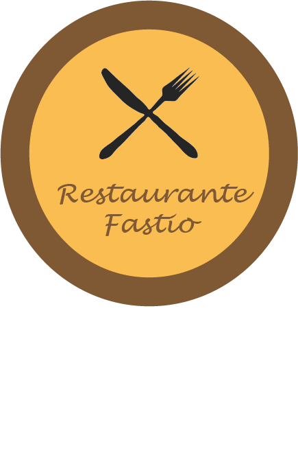

História
Ementa
Localização
Contactos
App
Horas...
Seja bem-vindo a um oásis gastronômico
onde a experiência vai além do paladar
é uma viagem sensorial.
Onde cada prato é uma obra-prima
e cada refeição é uma celebração

Bem Vindo
Restaurante Fastio
Ementa
Entradas
Bebidas
Carne
Peixe
Outros
Sobremesas